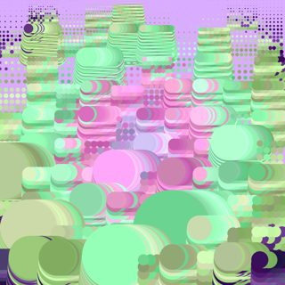
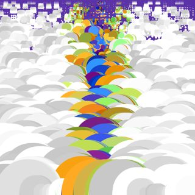
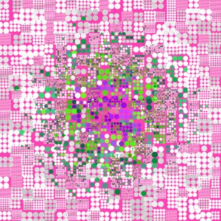

Art Blocks: the code and the token's seed are on-chain; the record, preview and live view come from Art Blocks' servers — these are our copies.
3 works · 9 files: for each work our copies of its record, its image (the preview) and its live view (the page that draws the art in a browser), each pinned at Pinata and Filebase and archived in S3. The code libraries the live views load are kept the same way. A marketplace reading the token's address goes to Art Blocks' servers, not to these copies; the copies keep the record, preview and live view if those servers stop, and their fingerprints are in the public list (see how these works are kept and proven). Artists are credited as the works' own records name them.

0xa7d8d9ef8d8ce8992df33d8b8cf4aebabd5bd270bafkreih7rdcfe5hequnlkvjzc6m3abdbb4m4urjeahmfzdr45tgnt2lth4 gateway.pinata.cloud · ipfs.filebase.io · c-ipfs-gw.nmkr.io — 2026-10-04 · pinned at Pinata and Filebase, archived in S3ff88c45274e4851ab555391799b004610f19ca452401d85c8e3cecccd9e9733f · 2,816 byteshttps://api.artblocks.io/token/149000234bafybeie4kcw6eulbiddmmzgiw32gx5f2wuatjteb6uitccrw56zc7rlrji gateway.pinata.cloud · ipfs.filebase.io · c-ipfs-gw.nmkr.io — 2026-10-04 · pinned at Pinata and Filebase, archived in S38929dfd9bf3692b62f6e66112de32f155a8020206eac8f38e7dc59c96261af47 · 1,875,774 byteshttps://media-proxy.artblocks.io/1/0xa7d8d9ef8d8ce8992df33d8b8cf4aebab…bafkreidgeswo5onu2zgsr6csnih6h7v3t3e3kum4jsy57vuopew2jtll5a gateway.pinata.cloud · ipfs.filebase.io · c-ipfs-gw.nmkr.io — 2026-10-04 · pinned at Pinata and Filebase, archived in S36624aceeb9b4d64d28f8526a0fe3febb9ec9b5519c4cb1dfd68e792da4cd6be8 · 3,263 byteshttps://generator.artblocks.io/1/0xa7d8d9ef8d8ce8992df33d8b8cf4aebabd5…
0xa7d8d9ef8d8ce8992df33d8b8cf4aebabd5bd270bafkreiaehj7a6vi67jzuouhgvkhiqaicosyj6rpnzhrc4rb6ktktgt4l5m gateway.pinata.cloud · ipfs.filebase.io · c-ipfs-gw.nmkr.io — 2026-10-04 · pinned at Pinata and Filebase, archived in S3043a7e0f551efa734750e6aa8e88010274b09f45edc9e22e443e54d5334f8beb · 2,908 byteshttps://api.artblocks.io/token/149000237bafybeiamjmtbdh45kqh2p4usjz5syblmled25xs4ny3x3vsw2l35a6yfp4 gateway.pinata.cloud · ipfs.filebase.io · c-ipfs-gw.nmkr.io — 2026-10-04 · pinned at Pinata and Filebase, archived in S34c170c3adcb22748b426197e82660bab9be4515161472d7e58fa36ab5fe009d1 · 903,676 byteshttps://media-proxy.artblocks.io/1/0xa7d8d9ef8d8ce8992df33d8b8cf4aebab…bafkreih4s4oxehybacwkrkmrva33xlig2vj6ft6wylupud7rc4qgog5smi gateway.pinata.cloud · ipfs.filebase.io · c-ipfs-gw.nmkr.io — 2026-10-04 · pinned at Pinata and Filebase, archived in S3fc971d721f0100aca8a991a837bbad06d553e2cfd6c2e8fa0ff11720671bb262 · 3,263 byteshttps://generator.artblocks.io/1/0xa7d8d9ef8d8ce8992df33d8b8cf4aebabd5…
0xa7d8d9ef8d8ce8992df33d8b8cf4aebabd5bd270bafkreigy3dbhk3f4evpx7ji5xaf3n67xryvpw3zdw6xvwxfqxwd5gluwwe gateway.pinata.cloud · ipfs.filebase.io · c-ipfs-gw.nmkr.io — 2026-10-04 · pinned at Pinata and Filebase, archived in S3d8d8c2756cbc255f7fa51db80bb6fbf78e2afb6f23b7af5b5cb0bd87d32e96b1 · 2,926 byteshttps://api.artblocks.io/token/149000449bafybeifctj3bn5q2n7krxw4ul33ayakhj52qygowxcqv273ifso2pz6hsq gateway.pinata.cloud · ipfs.filebase.io · c-ipfs-gw.nmkr.io — 2026-10-04 · pinned at Pinata and Filebase, archived in S3c2bcbe0be9da82810a3fac7b14aa6207400d42463fd0256bf17f7225f477e870 · 2,331,912 byteshttps://media-proxy.artblocks.io/1/0xa7d8d9ef8d8ce8992df33d8b8cf4aebab…bafkreibbf775cmfvjhr4r7jree5ga6rnt56rblkxeyxxccqbv4lvo4vf24 gateway.pinata.cloud · ipfs.filebase.io · c-ipfs-gw.nmkr.io — 2026-10-04 · pinned at Pinata and Filebase, archived in S3212fffd130b549e3c8fd31213a607a2d9f7d10ad57262f710a01af175772a5d7 · 3,263 byteshttps://generator.artblocks.io/1/0xa7d8d9ef8d8ce8992df33d8b8cf4aebabd5…Generated archive pages. Content identifiers point to the public IPFS network.